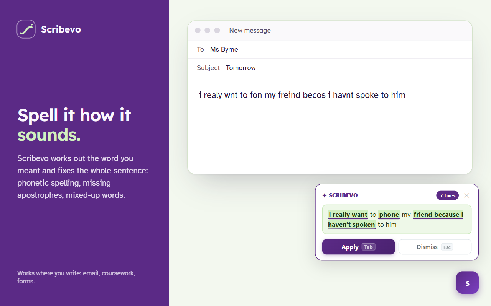
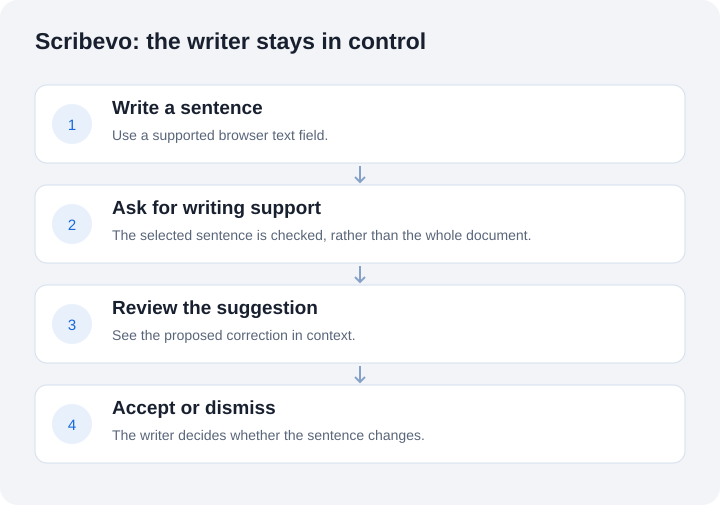

Salem Elatrash / Scribevo
Scribevo
Writing help that understands how you spell. A Chrome extension built by Salem Elatrash, beginning with the WordFlow final-year research project at TU Dublin.

Inspect the engineering
Project evidence
Python evaluation and NumPy analysis, with selected source code, a runnable example and tests.
The selected Python code measures correct, missed and unnecessary edits. A new NumPy companion aggregates synthetic outcome labels. It is separate from the shipped extension and original research model.
These tests check the public evaluation code, not model accuracy. Product release checks and academic research remain separate evidence below.
The problem
A writer may know what they want to say without knowing the dictionary spelling. Sound-based spellings, missing letters and swapped letters can make ordinary spell-check suggestions unhelpful. For students, that adds another task between an idea and a written assignment.
Why this matters now
About 1 in 10 people have dyslexia. Dyslexia Ireland.
AHEAD's 2023/24 report recorded 22,519 students registered with disability support services in Irish higher education, 8% of students. The largest category was specific learning difficulty, which includes dyslexia: 38.8%, or 8,738 students. AHEAD, 2023/24 report.
Many of these students rely on Grammarly. It now includes generative AI tools such as a paraphraser, citation finder and AI grader. Wonkhe, October 2025.
Some universities now treat Grammarly as generative AI. Since August 2024, Notre Dame's honour code has included editing tools like Grammarly when a lecturer bans generative AI. A University of North Georgia student was put on academic probation in 2024 after using Grammarly on an essay. Inside Higher Ed, November 2024. FOX 5 Atlanta.
This creates a risk for disabled students: a support plan permitting Grammarly may date from its spell-checking role. A student with dyslexia could follow that plan while breaking the AI rules. Wonkhe, October 2025.
Scribevo corrects the sentence the writer has already written. It handles dyslexic spellings such as fone, becos and freind, plus apostrophes and common grammar slips. It does not write, paraphrase, add ideas or change the writer's style. Nothing changes until the writer accepts the correction. The words stay theirs.
From version 2.1.0, Scribevo uses no AI unless the writer turns it on. By default each sentence is checked against Scribevo's own spelling rules. An optional setting, “Also use AI for harder sentences”, adds an AI model limited to sentence correction. It stays off until the writer switches it on.
The aim is a tool a disability service could name in a student's support plan because it corrects rather than generates writing. No university has approved Scribevo yet.
Project check, 4 October 2026: live on the Chrome Web Store at version 2.1.0; 248 backend and 69 extension tests pass.
What Scribevo does
Scribevo checks a sentence in context and presents a suggestion. The writer can accept it or dismiss it. The interface avoids a page full of red underlines and gives the person control over the edit.
Illustrative example You type: i realy wnt to fon my freind Scribevo suggests: I really want to phone my friend.
It supports phonetic spellings, missing or swapped letters, apostrophes and some grammar errors. A dictionary can be searched using the spelling a person knows. Site-level controls let the writer pause assistance.

My work
I developed the WordFlow research prototype, prepared a 6,571-pair training dataset and worked with a T5-based model using PyTorch and Hugging Face Transformers. I connected the research to a JavaScript browser extension and a Python FastAPI service. Four participant sessions informed the prototype's evaluation and interface work.
The project later developed into Scribevo. The current product uses spelling rules, with an optional AI-assisted correction stage that is off by default. The historical T5 prototype and the current product are different versions; results from one should not be presented as results for the other.
Evidence, with the limits attached
| Evidence | What it tells us |
|---|---|
| Published product | Project check, 4 October 2026: Scribevo version 2.1.0 is live on the Chrome Web Store. |
| Reported automated checks, 4 October 2026 | The project check reports 248 backend and 69 extension tests pass. This is evidence about those tests, not proof that every website works. |
| Rules-only evaluation | 70 out of 70 already-correct sentences were preserved. Harmful edits occurred in 3% of a separate 200-example held-out set. The provider-assisted stage was not part of this run. |
| Research prototype | 6,571 training pairs and four participant sessions belong to the original academic work. The original model training and participant work were not rerun in the fresh release check. |
Why this is useful for students
The intended benefit is reducing the spelling work needed to express an idea, without taking over the student's writing. Reviewing a suggestion may also help a writer notice the intended spelling. Improved grades, confidence or learning outcomes have not been established by the current evaluation.
Privacy is part of the design
Only the sentence being checked is sent to the Scribevo service. By default it goes no further. If the writer turns on the AI setting, the sentence is also processed by Groq in the United States. No account is required. Cloud processing is a real trade-off: users should read the product privacy policy before checking sensitive writing.
What still needs work
Context-dependent tense remains difficult. Browser editors vary, and automated checks do not replace testing in each real editor. There is no universal accuracy guarantee. Broader participant evaluation and more editor testing are needed.
Engineering choices
Separate the writing interface from the correction service. Measure harmful edits as well as successful corrections. Keep the suggested change reviewable. These decisions matter because a fluent replacement can still be the wrong replacement.
AI coding assistance was used during later engineering and verification work. The research origin, product decisions and evaluation limits are documented separately.
This is a public case study. Product source, datasets, trained artefacts, endpoints, credentials and implementation history remain private. Public descriptions cannot prevent someone from independently building a similar idea.